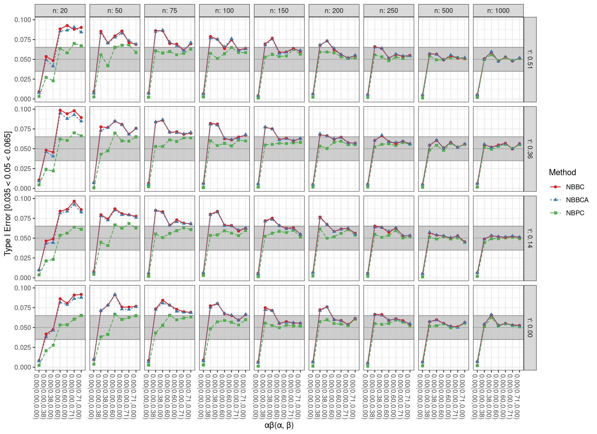
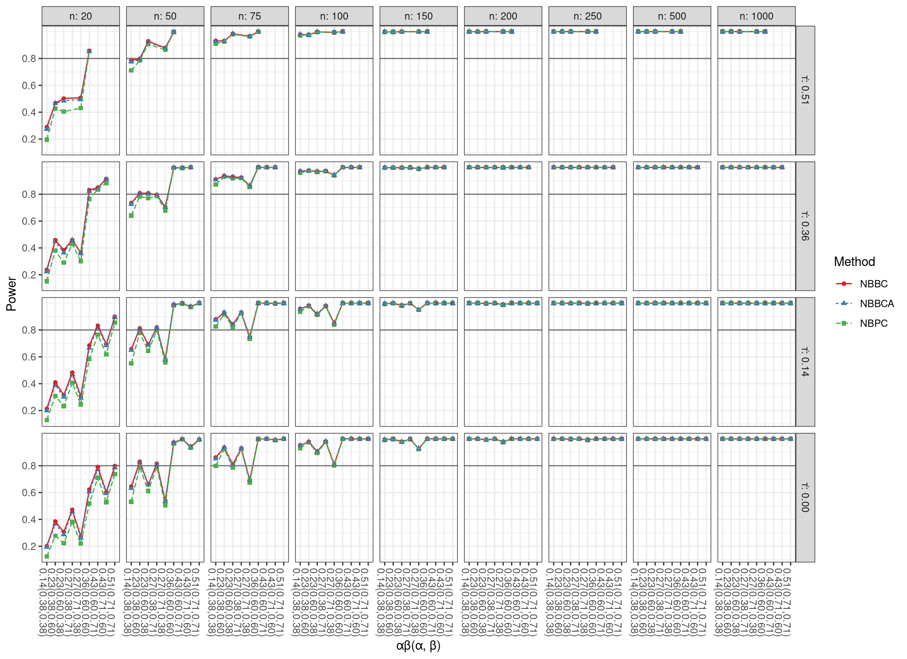
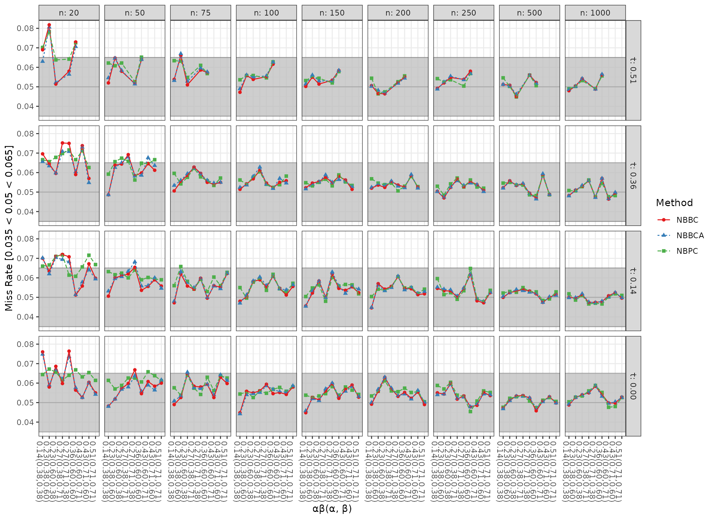
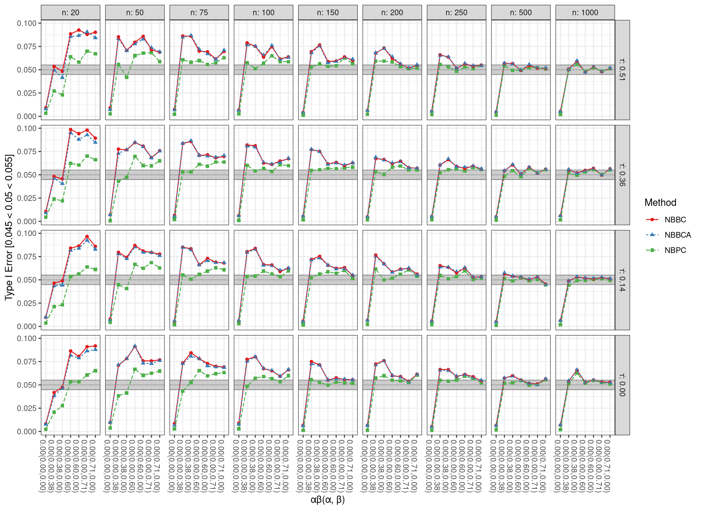
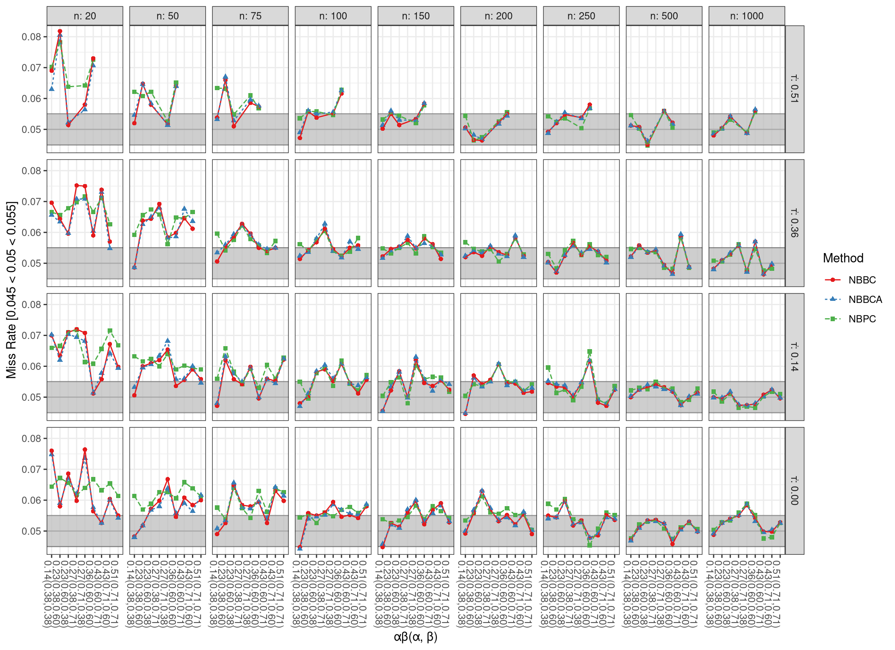
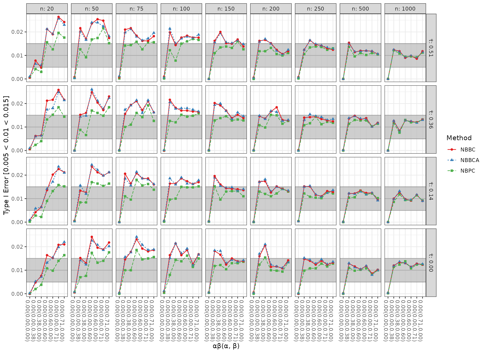
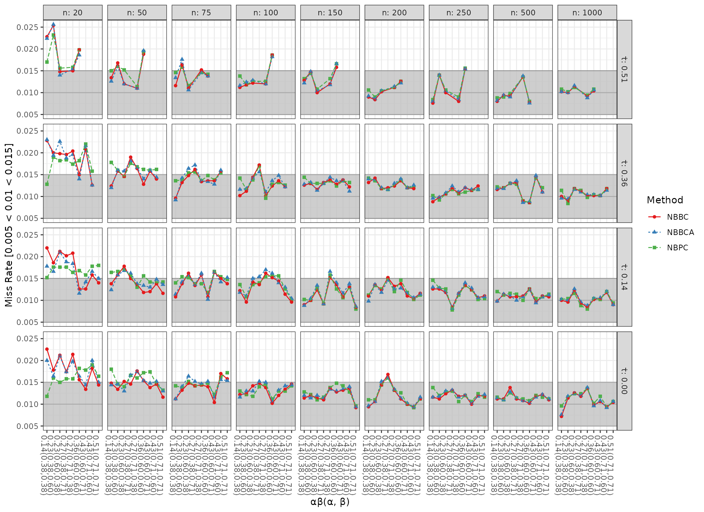

vignettes/results/results_mvn_nb_ci.Rmd
results_mvn_nb_ci.Rmdplot_type1(results_mvn_nb_ci)

plot_power(results_mvn_nb_ci)

plot_miss(results_mvn_nb_ci)

plot_type1(results_mvn_nb_ci, criteria = "strict")

plot_miss(results_mvn_nb_ci, criteria = "strict")

plot_type1(results_mvn_nb_ci, criteria = "liberal", alpha = 0.01)

plot_miss(results_mvn_nb_ci, criteria = "liberal", alpha = 0.01)
